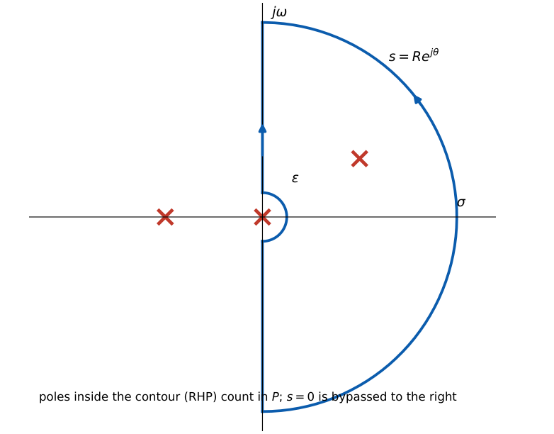
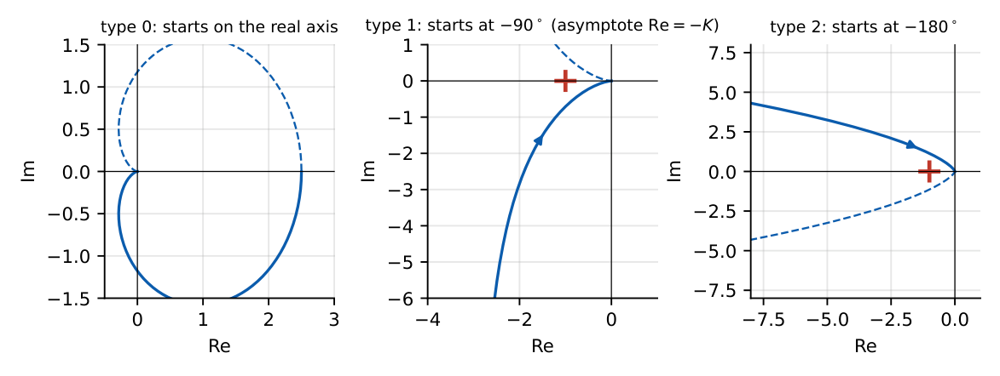
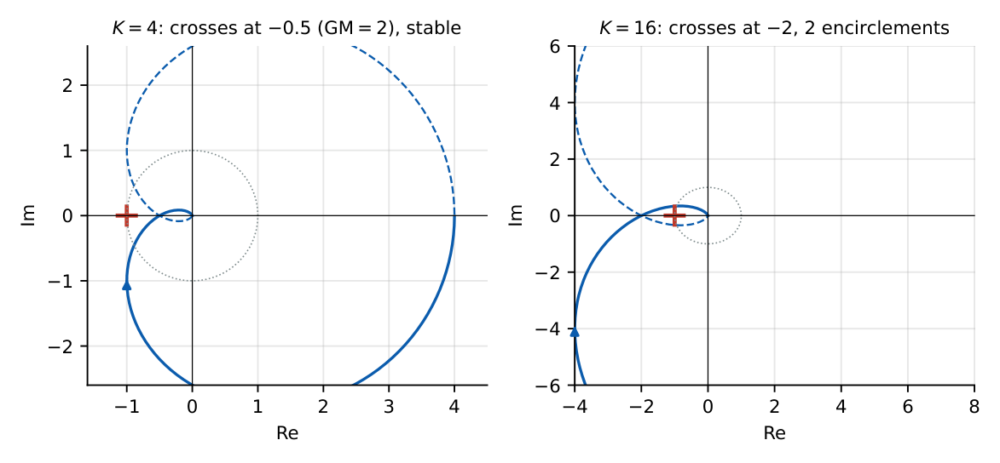
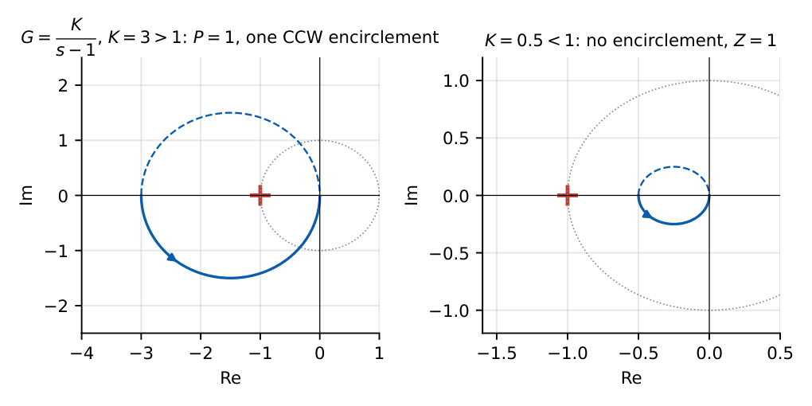

Nyquist Stability Criterion
In this chapter
Sketch the polar plot from \(\omega=0\) to \(\infty\); count encirclements of \(-1+j0\); use \(Z=P+N\); read GM and PM; handle poles at the origin. One 2-mark question in most papers.
16.1 Core concept
The polar plot is the locus of \(G(j\omega)H(j\omega)\) in the complex plane as \(\omega\) goes from \(0\) to \(\infty\). The Nyquist plot adds \(\omega\in(-\infty,0)\), which is the mirror image about the real axis. The point \(-1+j0\) is the critical point: it corresponds to \(1+GH=0\), i.e. a closed-loop pole on the \(j\omega\) axis.
16.2 Nyquist contour and the principle of the argument
Let the contour \(\Gamma_s\) enclose the entire RHP (the \(j\omega\) axis and an infinite semicircle, taken clockwise), indented around any open-loop poles on the axis.

By the principle of the argument, as \(s\) traverses \(\Gamma_s\), the image \(F(s)=1+G(s)H(s)\) encircles the origin \(N=Z-P\) times clockwise, where \(Z\) and \(P\) are the numbers of zeros and poles of \(F\) inside \(\Gamma_s\). Poles of \(F\) are the open-loop poles; zeros of \(F\) are the closed-loop poles. Shifting the origin of \(F\) to \(-1\) for \(GH\):
\(Z=P+N\), where \(P\) is the number of open-loop RHP poles, \(N\) the number of clockwise encirclements of \(-1+j0\) by the Nyquist plot of \(GH\), and \(Z\) the number of closed-loop RHP poles.
Stability \(\iff Z=0\iff N=-P\), i.e. \(P\) anticlockwise encirclements. For \(P=0\) (open-loop stable): the plot must not encircle \(-1\).
16.3 Shape of the polar plot near \(\omega=0\) and \(\infty\)

- Type \(N\): at \(\omega\to0^+\): magnitude \(\to\infty\) (for \(N\ge1\)), phase \(=-90^\circ N\). For type 1 the plot approaches a vertical asymptote \(\mathrm{Re}=-K(T_1+T_2+\cdots-\text{lead terms})\); e.g. \(\dfrac{K}{s(1+sT)}\) has \(\mathrm{Re}\to-KT\).
- High frequency: \(|GH|\to0\) with phase \(-90^\circ(n-m)\): the plot enters the origin tangentially to that direction.
- Indentation: the small semicircle around a pole at the origin maps to a large arc of radius \(\infty\) sweeping \(N\times180^\circ\) clockwise from the point at \(\omega=0^-\) to \(\omega=0^+\) (e.g. \(180^\circ\) for type 1, \(360^\circ\) for type 2). Include it when counting encirclements.
16.4 Worked examples

\(G=\dfrac{K}{(s+1)^3}\), \(P=0\). At \(\omega=\sqrt3\): \((1+j\sqrt3)^3=(2e^{j60^\circ})^3=8e^{j180^\circ}\), so \(G(j\sqrt3)=-K/8\): the plot crosses the negative real axis at \(-K/8\). The critical point is reached at \(K=8\). So stable for \(K<8\) (\(Z=0\)); for \(K=16\), \(N=2\) (clockwise) \(\Rightarrow Z=2\). This agrees with Routh: \(s^3+3s^2+3s+1+K\): \(9>1+K\Rightarrow K<8\).

\(G=\dfrac K{s-1}\): characteristic equation \(s-1+K=0\Rightarrow s=1-K\), stable for \(K>1\), matching the Nyquist analysis (\(G(0)=-K\); the circle of diameter \(K\) on the negative real axis encloses \(-1\) iff \(K>1\)).
\(G=\dfrac{K}{s(s+1)}\): at \(\omega\to0^+\): \(-90^\circ\), \(\mathrm{Re}\to-K\). The plot never reaches the negative real axis for finite \(\omega\) (phase \(>-180^\circ\)), so it never encircles \(-1\) after the infinite-arc closure: stable for all \(K>0\), GM \(=\infty\).
GM: if the plot crosses the negative real axis at \(-a\) (\(a<1\)), \(\mathrm{GM}=1/a\). PM: where the plot crosses the unit circle at angle \(\phi\), \(\mathrm{PM}=180^\circ+\phi\). In the \(K=4\) plot above \(a=0.5\), GM \(=2\) (\(6\) dB).
16.5 Nyquist vs Routh
Routh works on the characteristic polynomial and gives yes/no plus the range of \(K\); Nyquist works from frequency-response data (even measured), handles time delay and non-rational functions, and gives GM and PM. Both agree in the examples above.
16.6 Physical interpretation
Encirclements of \(-1\) count closed-loop poles in the RHP. A plot passing near \(-1\) means the sensitivity \(|1/(1+GH)|\) is large: the closed-loop response is highly resonant (poor margins). Distance from \(-1\) to the plot is the reciprocal of the peak of the sensitivity function.
(i) If \(P=0\), stability is equivalent to “the plot crosses the negative real axis to the right of \(-1\)” (for a single such crossing). (ii) Count encirclements by drawing a ray from \(-1\) to infinity and counting signed crossings of the Nyquist curve (clockwise \(+\)). (iii) GM: \(1/|{\rm crossing}|\); PM: angle at the unit-circle crossing. (iv) Each pole at the origin adds \(180^\circ\) clockwise of infinite arc.
(i) \(N\) is clockwise positive: \(Z=P+N\). Many use \(N=Z-P\) with anticlockwise counted positive; be consistent. (ii) Include the mirror image for \(\omega<0\) and the closure arcs. (iii) The critical point is \(-1\), not \(0\). (iv) The polar plot (\(\omega\ge0\) only) needs doubling for counting. (v) Right-half-plane open-loop poles must be included in \(P\).
Q1. The critical point in the Nyquist plot of \(G(s)H(s)\) is (A) \(0+j0\) (B) \(-1+j0\) (C) \(1+j0\) (D) \(j1\).
Q2. In \(Z=P+N\), \(N\) counts (A) clockwise encirclements of \(-1\) (B) anticlockwise encirclements (C) poles (D) zeros.
Q3. A type-1 polar plot at \(\omega\to0^+\) has phase (A) \(0^\circ\) (B) \(-90^\circ\) (C) \(-180^\circ\) (D) \(-270^\circ\).
Answers: Q1 (B). Q2 (A). Q3 (B).
Q4. \(P=2\) and the Nyquist plot makes two anticlockwise encirclements of \(-1\). The closed loop has \(Z=\) (A) 0 (B) 2 (C) 4 (D) \(-2\).
Q5. \(G=\dfrac{K}{s(s+1)(s+2)}\): negative-real-axis crossing at \(\omega=\sqrt2\) with magnitude \(K/6\). Closed loop is stable for \(K<\) (A) 3 (B) 6 (C) 12 (D) 2.
Answers: Q4 (A): \(Z=P+N=2-2=0\). Q5 (B).
Q6. The Nyquist plot of \(G(s)H(s)\) crosses the negative real axis at \(-0.25\). The gain margin in dB is (two decimals).
Q7. \(G=\dfrac{K}{(s+1)^3}\): the value of \(K\) at which the closed loop becomes marginally stable is .
Answers: Q6: GM \(=4\), \(20\log4=12.04\) dB. Q7: \(8\).
Q8. Which statements are correct? (A) For \(P=0\) stability needs no encirclement of \(-1\) (B) Poles at the origin need indentation of the contour (C) \(Z=P+N\) with \(N\) clockwise (D) Nyquist criterion applies only to rational functions.
Answers: Q8: (A), (B), (C). It also applies to delayed systems.
\(G(s)H(s)=\dfrac{K}{s(s+1)(s+3)}\): crossing at \(\omega=\sqrt3\) with \(|GH|=K/12\) (from \(s^3+4s^2+3s+K\): \(K<12\)). For \(K=6\) the plot crosses at \(-0.5\), GM \(=2\), no encirclement, \(Z=0\); for \(K=24\) it crosses at \(-2\), two clockwise encirclements, \(Z=2\).
T1. An open-loop stable system’s polar plot crosses the negative real axis at \(-2\). Is the closed loop stable? Number of RHP poles?
T2. Explain the \(180^\circ\) arc for a pole at the origin.
Answers: T1: a crossing left of \(-1\) means the full plot (with its mirror image) encircles \(-1\) twice clockwise for a typical third-order loop, so \(N=2\) and \(Z=P+N=2\): unstable, two RHP poles. T2: on the indentation \(s=\epsilon e^{j\theta}\), \(\theta:-90^\circ\to90^\circ\), \(G\approx K/(\epsilon e^{j\theta})\) has phase \(-\theta\) going from \(+90^\circ\) to \(-90^\circ\): a \(180^\circ\) clockwise arc at infinite radius.
- Critical point \(-1+j0\); \(Z=P+N\) (\(N\) clockwise). Stable \(\iff Z=0\).
- \(P=0\): no encirclement; \(P>0\): need \(P\) anticlockwise encirclements.
- Type \(N\): starts at \(-90N^\circ\); infinite arc \(N\times180^\circ\) clockwise.
- GM \(=1/|\text{negative-axis crossing}|\); PM \(=180^\circ+\phi\) at \(|GH|=1\).